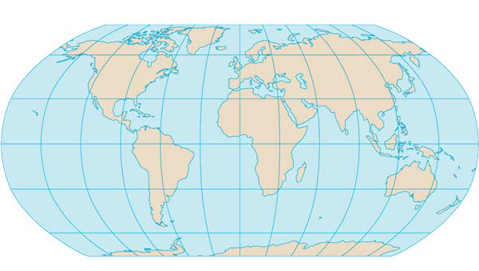
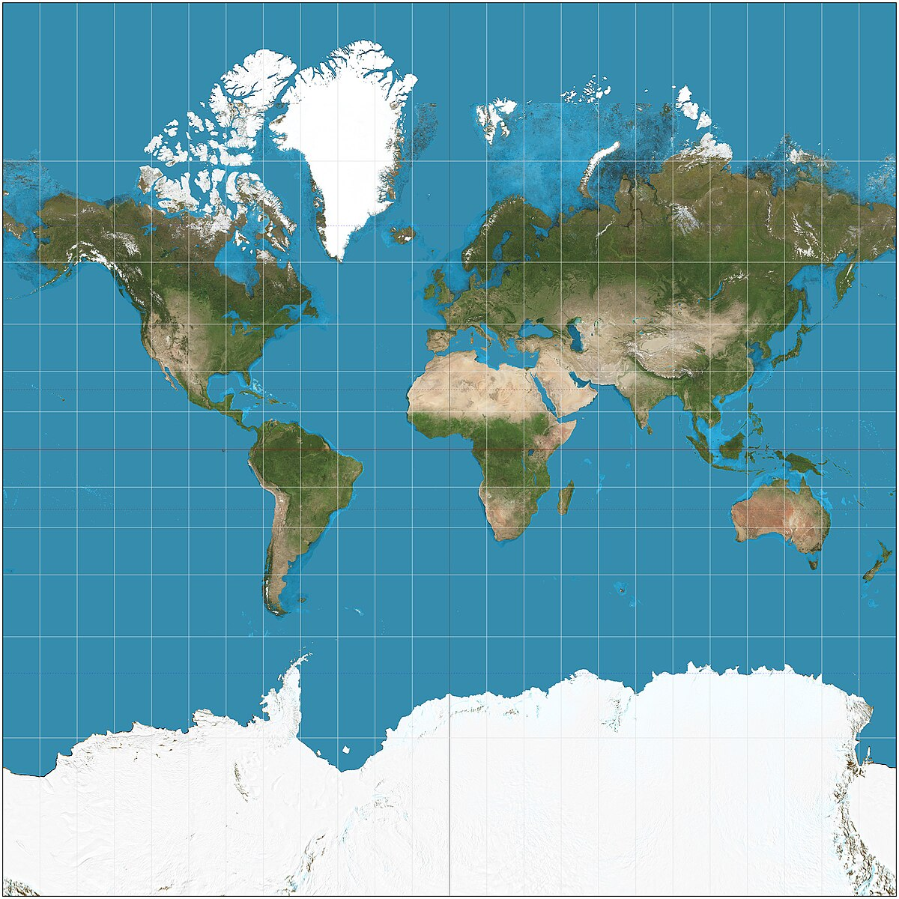
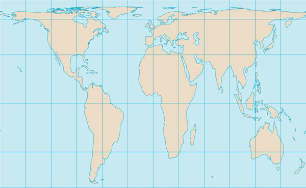
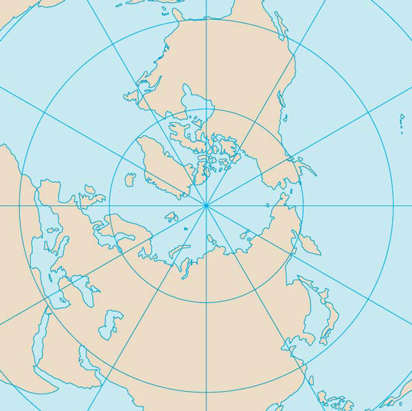

APHG Home
There are 4 common map projections. they are all distorted
Map Distortions
Map Types
Robinson

- Pros
- Globe like
- not too distorted
- Cons
- round
- Latitudes are parabolic
- more distorted by the poles
Mercator

- Pros
- Everyone likes it
- Rectangular
- Shapes are accurate
- directions are correct
- Cons
- Greenland is the size of Africa
Gall-peters

- Pros
- Fixes mercator’s relative size problem
- Area is correct
- Cons
- It looks bad
- Everything is really long
Azimuthal Projection

- Pros
- Perfectly un-distorted poles
- Gives new perspective
- good for cold war maps
- Cons
- Only one half of the world
- really distorted on the outside
- We arent used to the angles
GOODE-HOMOLOSINE

- an actually undistorted image
- fits a 3d object on a 2d surface Cons:
- it looks funny
- distances between whitespaces are confusing
summary
Theres a lot of ways we can view the world, and different maps will be used for different applications. Whichever one gets the point across best should be the one you use. Also, most of them distort africa.